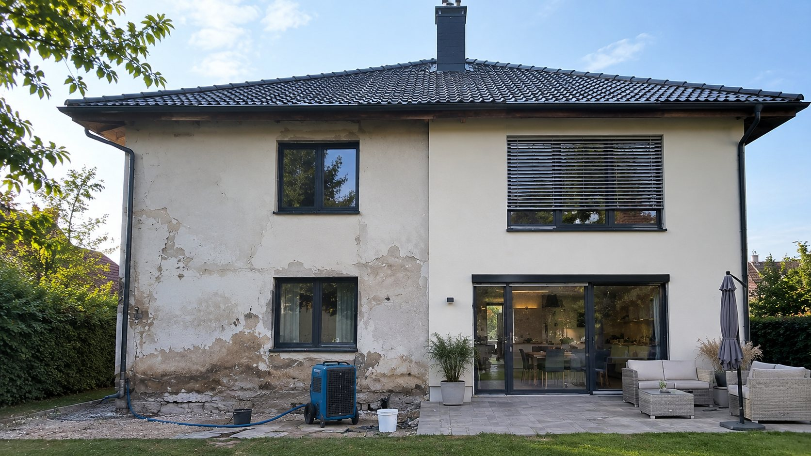
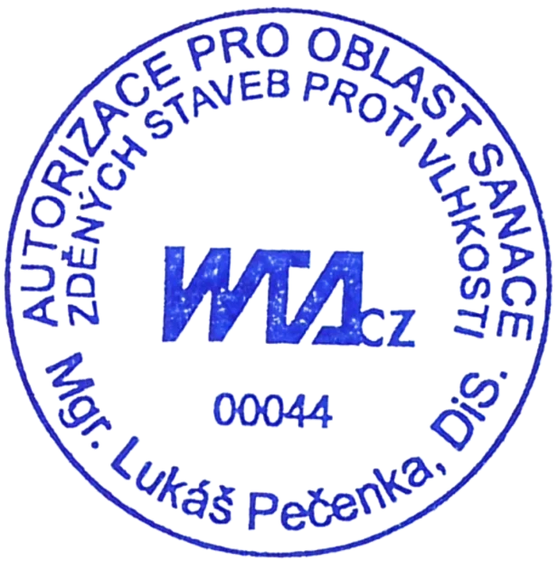
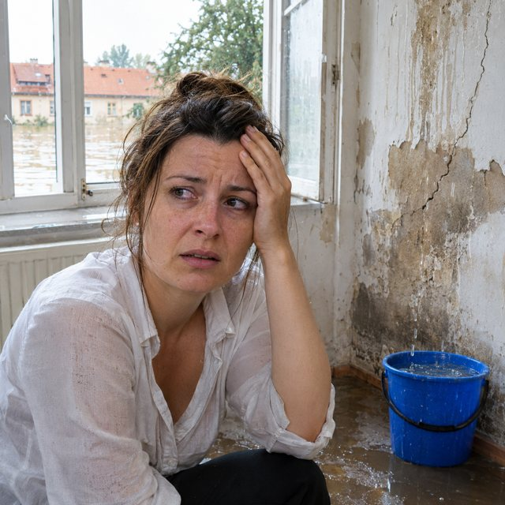
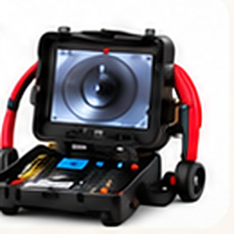
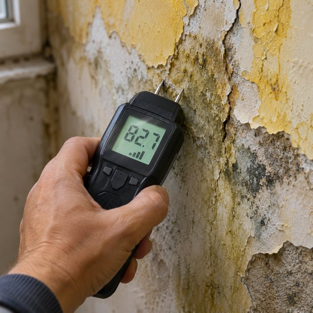
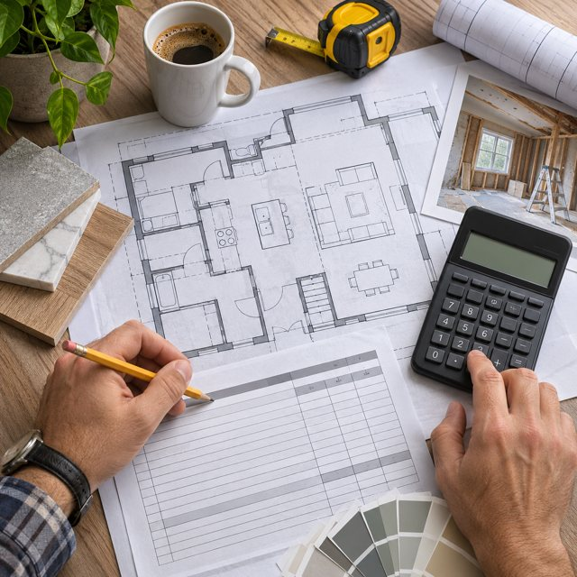
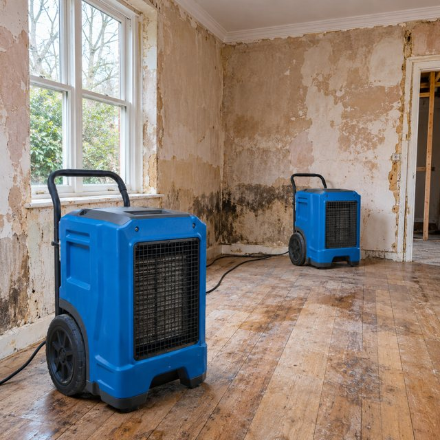
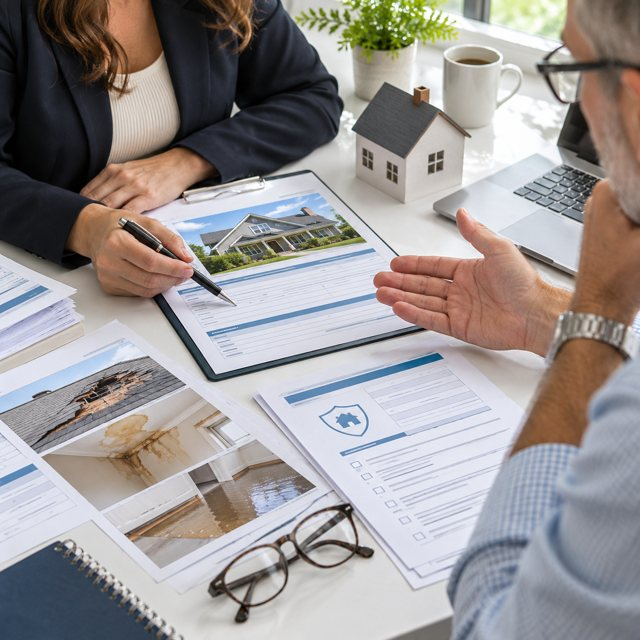

Ověřená autorizaceVODA · VLHKOST · ŘEŠENÍ
Známe
správný
postup.
Pomáháme vrátit domovy do normálu
po haváriích vody. Rychlá diagnostika,
účinné vysoušení, kompletní opravy
a pomoc s pojištěním – vše pod jednou střechou.

01HAVÁRIE
Voda v domě?
Postup krok za krokem

02KAMEROVÁ
ZKOUŠKA
Prohlídka kanalizace
a potrubí kamerou

03DIAGNOSTIKA
Měření vlhkosti,
příčina a záznam stavu

04ROZPOČET
Orientační rozpočet
vysoušení a oprav

05VYSOUŠENÍ
A SANACE
Vysoušeče, technika
i sanace omítek

06REVIZE
POJIŠTĚNÍ
Kontrola krytí
a lepší pojištění
O NÁS
Autorizované osoby a důvěra na trhu přes 20 let
HAVARIX vede Mgr. Lukáš Pečenka, DiS., autorizovaná osoba pro sanace zděných staveb proti vlhkosti. Přes 20 let se věnuje průzkumům vlhkosti a sanacím staveb – od rodinných domů až po památkové objekty.
Proč HAVARIX →- Autorizované osobycertifikát WTA pro sanace zděných staveb, protokoly s razítkem
- Průzkumy a měřenívlhkosti, příčin a rozsahu škod
- Přes 20 let na trhua získaná důvěra zákazníků

Ověřená odbornost
Autorizovaný odborník WTA CZ pro sanace zděných staveb proti vlhkosti
Mgr. Lukáš Pečenka, DiS., je jedním z mála autorizovaných odborníků Vědeckotechnické společnosti pro sanace staveb a péči o památky (WTA CZ). Autorizace je zapsaná ve veřejném seznamu – ověřit si ji může každý.
- Číslo autorizace
- 00044
- Platnost
- do 31. 12. 2028
- Obor
- Sanace zděných staveb proti vlhkosti
- Razítko
- Oprávnění užívat autorizační razítko WTA CZ
Oficiální seznam osob s udělenou autorizací vede WTA CZ (PDF). Hledejte číslo 00044.